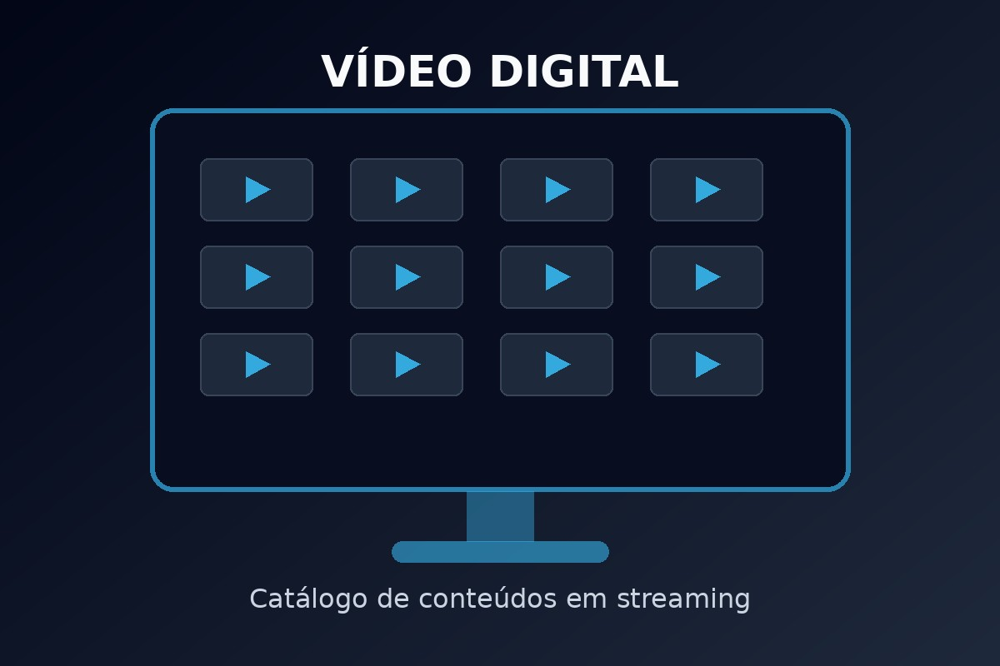

Música
A música em streaming permite ao utilizador aceder a faixas digitais sem descarregar previamente os ficheiros completos.
Saber mais sobre áudio digitalPlataforma Estática de Streaming Multimédia
A StreamZone é uma plataforma fictícia criada para demonstrar a utilização de tecnologias Web na construção de um sítio estático dedicado ao streaming multimédia.
O projeto utiliza HTML5, CSS3, JavaScript, XML e XSD.
Ver catálogoA música em streaming permite ao utilizador aceder a faixas digitais sem descarregar previamente os ficheiros completos.
Saber mais sobre áudio digital
O vídeo digital combina imagem em movimento, som, compressão e transmissão pela Internet.
Saber mais sobre vídeo digitalO catálogo da plataforma é guardado num ficheiro XML e carregado para uma tabela HTML através de JavaScript.
A interface foi preparada com CSS3 para se adaptar a computadores, tablets e telemóveis.